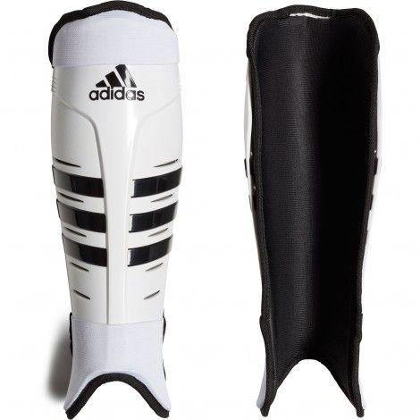

PRODUCTOS RECOMENDADOS
Palos senior
Palo para delantera, especial para realizar habilidades. Curva baja

Palo para delantera, especial para despedir, curva minima

Palo para mediocampista, ideal para pases largo y recepciones precisas
.png)
Palo curva max 24mm a 200mm de la pipa, ideal para arrastres y golpe de reves

Palo para defensora, sin curva para mayor presicion en las salidas de golpes, mango ovalado para mejor agarre

Palo para defensoras, curva 22mm a 230mm de la pipa, ideal para salidas de flick

Palo recto con mango ovalado para salidoras de corner corto

Paleras y bolsos
Palera unisex con 8 compartimientos color azul y celeste, detalle en rojo

Palera unisex con 8 compartimientos color gris y rosa

Bolso rosa con dos compartimiento sin porta palo

Accesorios para hockey
Pack por seis vinchas finitas adidas estampadas

Pack por seis vinchas finitas adidas en tonalidades fuccia

Pack por seis vinchas finitas adidas en tonalidades verde pastel

Pack por seis vinchas finitas adidas en tonalidades rosa pastel

Pack por seis vinchas finitas adidas en tonalidades violetas

Canilleras atomicas talles s, m, l, xl
Protector bucal transparecte de silicona amoldable

Botines para hockey
Botines de hockey para sintetico colores turquesa y suela amarilla

Botines de hockey para sintetico colores azules, verde agua y naranja

Botines de hockey para sintetico colores azules y celestes

Botines de hockey para sintetico colores gris negro y verde manzana

Botines de hockey para sintetico colores grises y negro

Botines de hockey para sintetico colores naranja y bordo

Botines de hockey para sintetico colores naranjas y negros